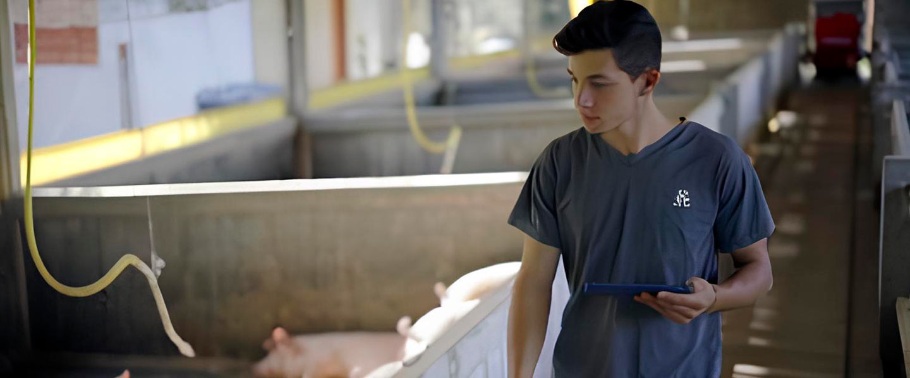

Picking Up (software de controle de armazém (WMS))

A integração contará com um software de controle de armazém (WMS), permitindo a organização e o rastreamento dos produtos armazenados através da tecnologia RFID e/ou QRCode. Esta solução moderna facilita a gestão dos estoques, garantindo maior controle e eficiência nos processos logísticos.
Coopig

O Coopig, originário do oeste de Santa Catarina, o polo de produção de proteína animal do país, tem como objetivo aumentar a produtividade e a eficiência na produção de suínos e aves. Através de soluções inovadoras de gestão e automação, o Coopig auxilia os produtores a alcançar melhores resultados, contribuindo para o avanço do setor.
Roboagro
A Roboagro representa uma revolução tecnológica aplicada à suinocultura de precisão. Este equipamento inovador é projetado para a distribuição de ração nas fases de creche, crescimento e terminação dos suínos. O alimentador automático da Roboagro trabalha com precisão, entregando a quantidade exata de ração, garantindo uma alimentação adequada e eficiente para os animais.
A integração dessas plataformas proporciona uma solução completa e inovadora para os principais agentes que atuam na gestão da produtividade de aves e suínos, combinando tecnologia avançada e automação para otimizar os processos e aumentar a eficiência.